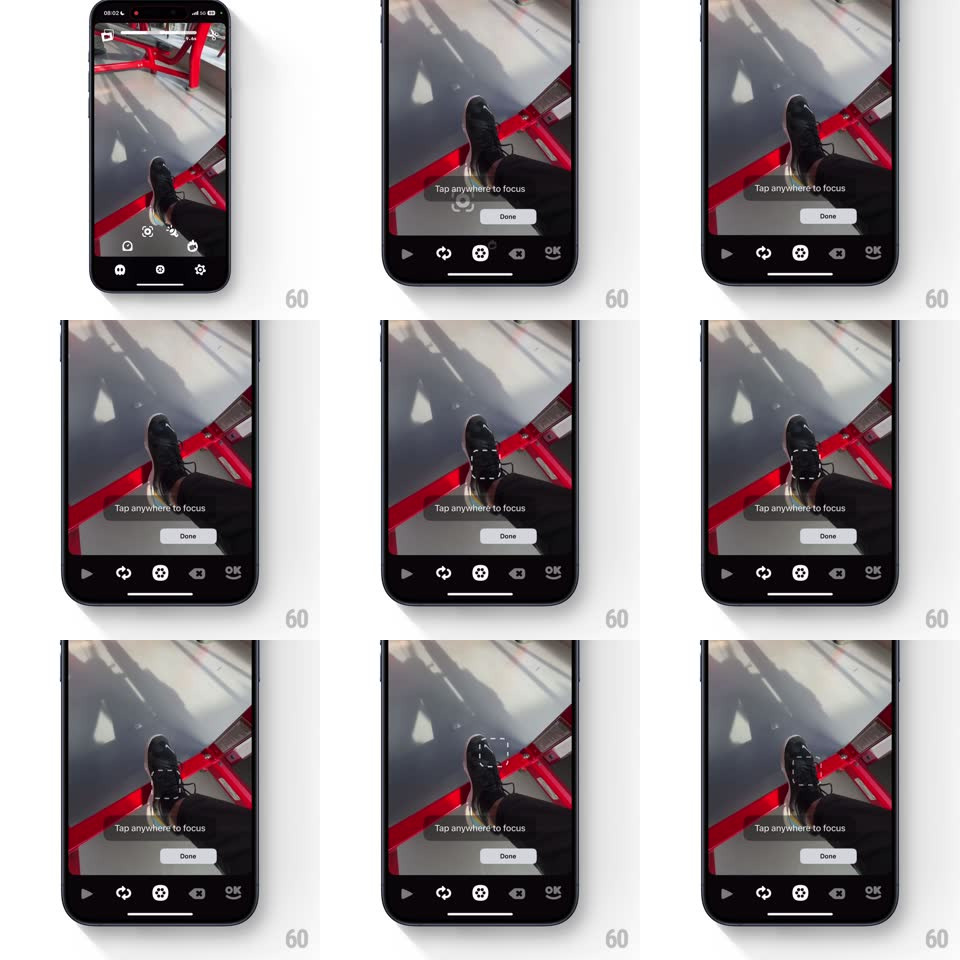

Media
Frame-by-frame

Rebuild this interaction 1:1: OK Video's tap-to-focus - in a guided mode with "Tap anywhere to focus" and a Done button, tapping the viewfinder spawns a dashed square at the touch point whose dashes march around its perimeter until focus locks.

Rebuild this interaction 1:1: OK Video's tap-to-focus - in a guided mode with "Tap anywhere to focus" and a Done button, tapping the viewfinder spawns a dashed square at the touch point whose dashes march around its perimeter until focus locks.
## Integration
Integration: stack-agnostic spec - springs given as stiffness/damping, timed motions as duration + curve; map every value to your framework and animation library of choice.
## Scene
Camera viewfinder with a gray hint bar ("Tap anywhere to focus") and a white "Done" pill beneath it; standard bottom control bar.
## Motion spec
Pattern: marching-ants focus reticle.
- Tap: a dashed square (48px, white dashes at 90% opacity) pops in at the touch point (scale 1.4 -> 1, spring ~420/18, 150ms).
- While focusing, the dashes march clockwise around the square (dash-offset animation, one lap per 900ms, linear) - unmistakably alive.
- On focus lock (~600ms): the marching slows and stops over 300ms, the square holds solid for 400ms, then fades to 30% opacity and shrinks to 32px, parked at the focus point.
- A second tap elsewhere: the parked square fades out as the new one pops in - only one reticle ever lives.
- The hint bar pulses once (background to 60% gray, 300ms) on the first successful focus, confirming the gesture worked.
## Calibration
- Dash pattern: 6px on / 4px off, 2px stroke - crisp at 1x scale.
- The reticle never blocks the subject long: full visibility only during the 600ms hunt.
## Reduced motion
Static dashed square that fades after lock; no marching.
## Don't miss
- Marching ants are the point - a solid square would read as dead UI, the motion IS the "working on it" signal.
- The reticle parks small instead of disappearing - the user can see where focus is set.